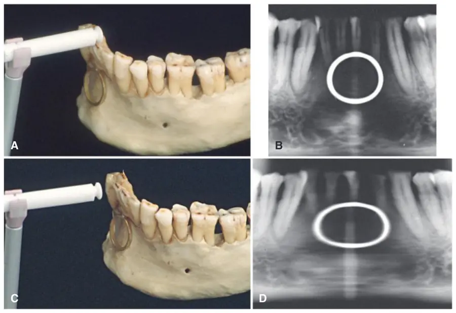
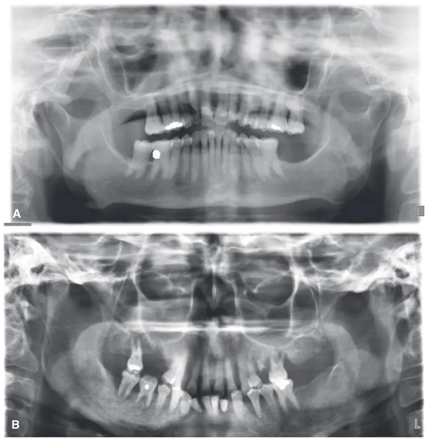

نسخه استخراجشده؛ ترجمه یا تأیید علمی انجام نشده است. وضعیت: captured
نقطهی شروع را بپذیر: «تصویر پانورامیک ناگزیر اعوجاج اندازه و شکل جسم را تولید میکند، و آن را برای اندازهگیریهای خطی یا زاویهای غیرقابل اعتماد میسازد.»

و چهار عامل بر آن اثر میگذارند: زاویهی پرتو، فاصلهی منبع تا جسم، مسیر مرکز چرخش، موقعیت جسم در فوکال تراف. و همهی اینها «میان دستگاهها و میان نواحی مختلف فک در یک دستگاه» فرق میکنند.
و نتیجهی صریحش: «این متغیرها اعمال ضریب بزرگنمایی از پیش تعیینشده را ناممکن میکنند.» پس برای اندازهگیری دقیق به پانورامیک تکیه نکن.
بزرگنمایی افقی — قاعدهی طلایی: «با موقعیت جسم در فوکال تراف تعیین میشود.» و منطقش، که ارزش دانستن دارد:
و مقدارش هم قابل توجه است: در آزمایشی با یک حلقهی فلزی، جابهجایی تنها ۵ میلیمتر قدامی یا خلفی از مرکز فوکال تراف، اعوجاج آشکار حلقهی فلزی و دندانها را ساخت. و نکتهی مهم: «بُعد عمودی، برخلاف بُعد افقی، اندکی تغییر میکند.»
و چرخش سر همان قاعده را به شکل نامتقارن اجرا میکند: «ساختارهای خلفی سمتی که سر به آن چرخیده در بُعد افقی بزرگ میشوند، چون از گیرنده دورترند؛ و ساختارهای خلفی سمت مقابل نزدیکتر به گیرنده و در بُعد افقی کوچکتر میشوند.»
و نتیجهی تصویریاش: «مولرها و راموس مزیودیستالی بزرگ و همپوشانی شدید پرمولر در یک سمت، و مولرها و راموس مزیودیستالی کوچکتر در سمت دیگر.» و هشدار: «این ظاهر نباید با آسیمتری مادرزادی یا تکاملی صورت اشتباه شود.»
و یک ابزار عیبیابی ساده که همیشه به کار میآید: «پهنای ظاهری مزیودیستالی مولرهای اول مندیبل را دوطرفه مقایسه کن. سمت کوچکتر بیش از حد نزدیک گیرنده است، و سمت بزرگتر بیش از حد نزدیک مرکز چرخش.»
و اعوجاج افقی در قدام بدتر است: «در ناحیهی قدامی، بزرگنمایی افقی با دور شدن جسم از مرکز فوکال تراف بهشدت افزایش مییابد؛ درجهی این بزرگنمایی در نواحی خلفی کمتر از ناحیهی قدامی است.» پس در پیگیری یک ضایعهی استخوانی — بهویژه در قدام — به این نکته توجه ویژه کن.
و بُعد عمودی قاعدهی خودش را دارد: «بزرگنمایی عمودی با فاصلهی میان منبع و جسم تعیین میشود، مانند رادیوگرافی معمول.» و در برخی دستگاهها این فاصله در سراسر چرخه ثابت نگه داشته میشود، که بزرگنمایی عمودی نسبتاً یکنواختی میدهد.
ولی شیب پرتو یک خطای تفسیری میسازد: پرتو پانورامیک شیب اندکی کائودوکرانیال (از پایین به بالا) دارد. پس «ساختارهای نزدیکتر به منبع، بالاتر روی تصویر پروجکت میشوند».
و پیامد بالینیاش دقیقاً همان چیزی است که در ایمپلنت اهمیت دارد: از سه موقعیت ممکن کانال مندیبولار در یک صفحهی افقی، کانال لینگوالی نزدیکتر به آپکس و کانال باکالی دورتر از آپکس پروجکت میشود. «پس فاصلهی میان آپکس ریشه و کانال مندیبولار میتواند روی پانورامیک نادرست نمایش داده شود.»
پیش از هر چیز، آمادهسازی: همهی لوازم فلزی برداشته میشود؛ و «دستگاه را با چرخاندنش به بیمار نشان بده و نیاز به بیحرکت ماندن را توضیح بده — بهویژه برای کودکان که ممکن است مضطرب باشند». و یک دستور کوچک با ارزش بزرگ: «به کودکان بگو رو به جلو نگاه کنند و تیوب را با چشمشان دنبال نکنند.»

و وضعیت قدامی-خلفی چگونه ساخته میشود: «بیماران لبههای برندهی انسیزورهای ماگزیلا و مندیبل را در شیار وسیلهی موقعیتدهی (بایت استیک) میگذارند.» و شرط مهم: «صفحهی ساژیتال میانی باید در فوکال تراف مرکز شود، بدون هیچ جابهجایی جانبی مندیبل هنگام این حرکت پیشآمدگی.» و لیزرها برای همراستا کردن صفحهی ساژیتال، صفحهی فرانکفورت، و موقعیت قدامی-خلفیاند.
خطای ۱ — بیش از حد خلفی: «ابعاد مزیودیستالی بزرگشده (دندانهای «چاق») در سکستانهای قدامی.»
خطای ۲ — بیش از حد قدامی: «ابعاد مزیودیستالی کاهشیافته (دندانهای «لاغر») در سکستانهای قدامی.»
خطای ۳ — صفحهی ساژیتال در خط وسط چرخشی نیست: «رادیوگرافی سمت راست و چپ نابرابر بزرگشده در بُعد افقی نشان میدهد.» و این «خطای شایعی» است که «اعوجاج افقی در نواحی خلفی، همپوشانی بیش از حد دندان در ناحیهی پرمولر، و گاهی تصاویر غیرتشخیصی و بالینی غیرقابل قبول» میسازد.
خطای ۴ — چانه بیش از حد بالا: «صفحهی اکلوزال روی رادیوگرافی صاف یا وارونه ظاهر میشود و تصویر مندیبل اعوجاج پیدا میکند.» و نشانهی دوم که آن را قطعی میکند: «سایهی رادیواوپک کام سخت روی ریشههای دندانهای ماگزیلا سوپرایمپوز میشود.»
خطای ۵ — چانه بیش از حد پایین: «صفحهی اکلوزال خط لبخند اغراقشده نشان میدهد، دندانها بهشدت همپوشان میشوند، ناحیهی سمفیز مندیبل ممکن است از کلیشه بیرون بیفتد، و هر دو کندیل ممکن است از لبهی فوقانی کلیشه پروجکت شوند.»
و راهنمای درست چانه: «صفحهی اکلوزال طوری همراستا میشود که در قدام اندکی پایینتر باشد.» و راهنمای عملی: بیمار را طوری بگذار که «خطی از تراگوس گوش تا کانتوس بیرونی چشم موازی کف باشد».
و دو خطای دیگر که به گردن و زبان مربوطاند: